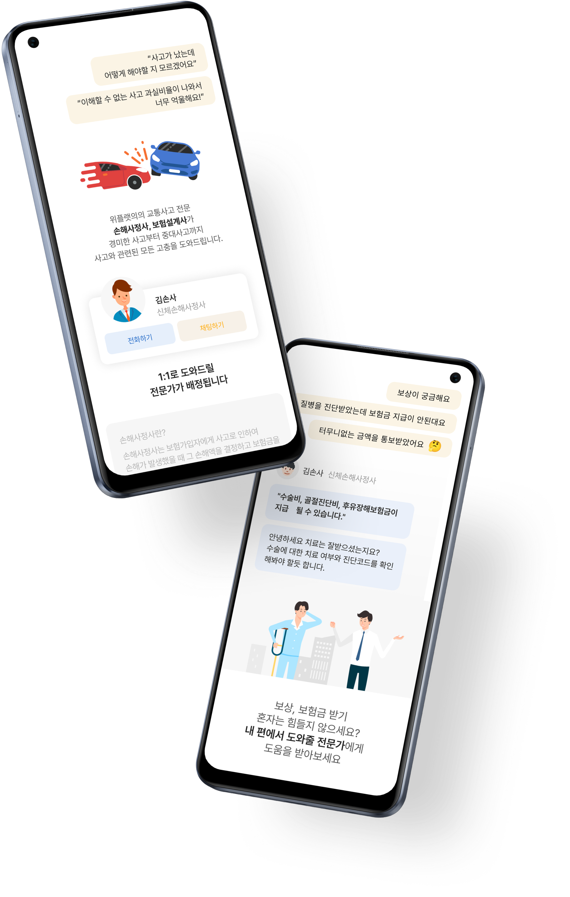
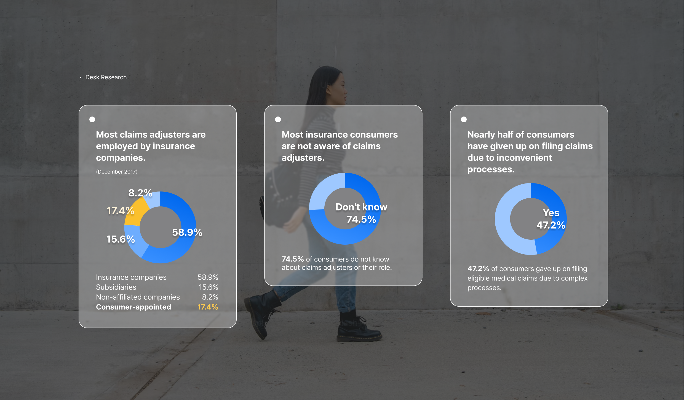
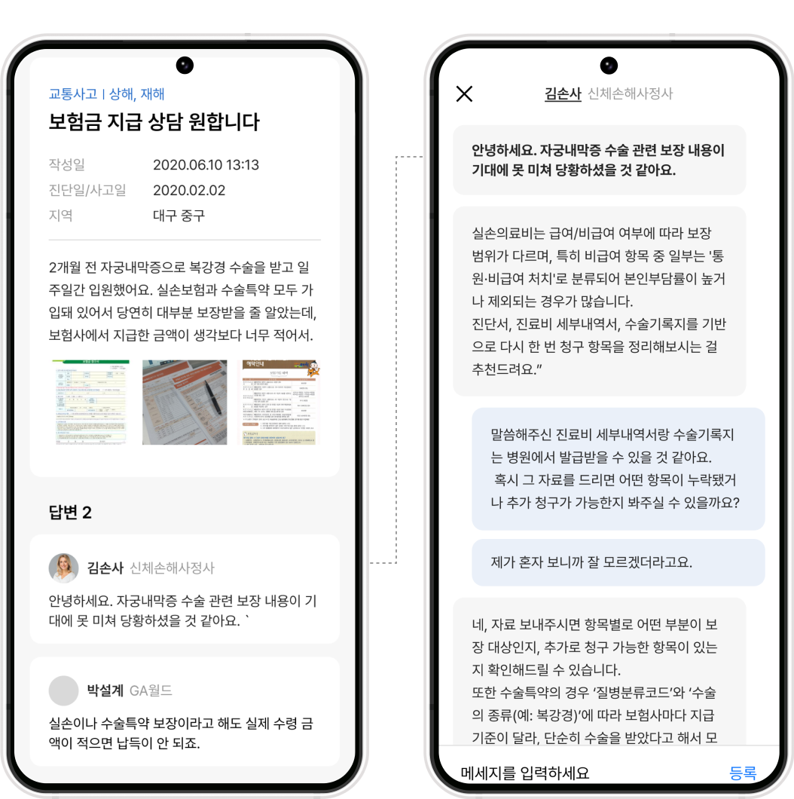
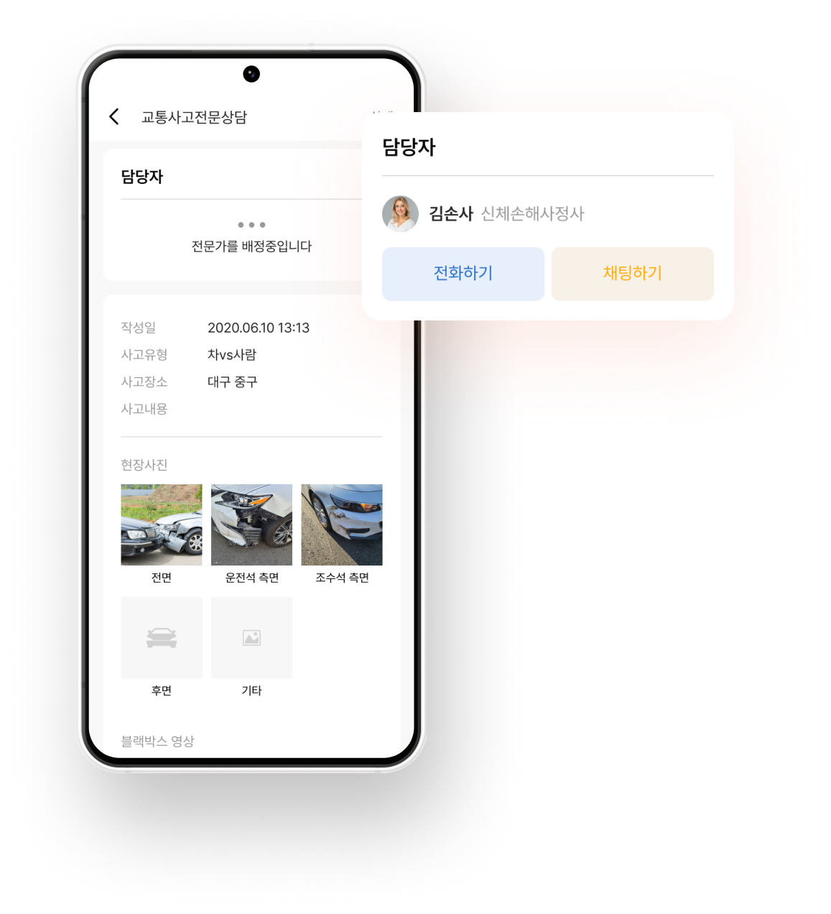
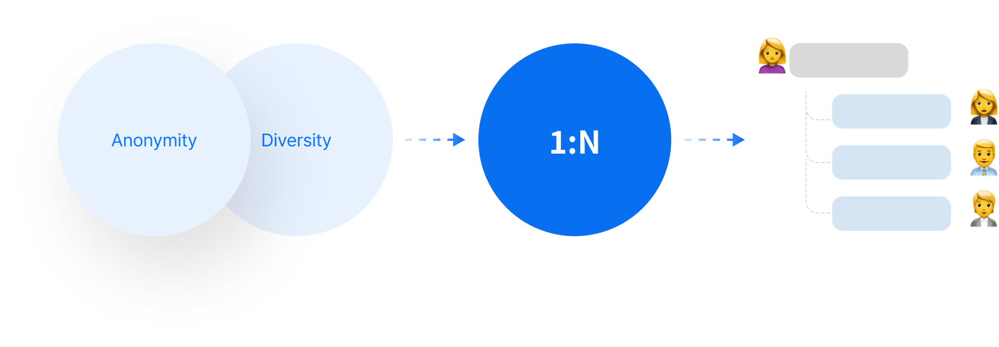
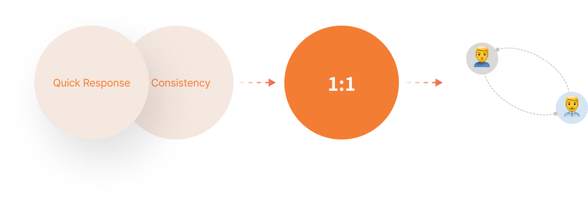

Insurance Dispute Counseling Service
Insurance consultation flow in two variations
To differentiate the insurance consultation experience, we aimed to uncover users’ underlying needs.
I conducted research on real insurance dispute scenarios and found that they could be grouped into two categories. Based on these insights, I designed two distinct user flows using 1:N and 1:1 models.
As a result, this approach increased user retention by 54.07%.
UX/UI Design 80%


Insurance can be divided into two main categories.
Using empathy and journey mapping, I analyzed and modeled users’ situations, thoughts, and emotions in dispute scenarios.
This revealed fundamentally different patterns between general insurance and traffic accident cases, which I defined as parallel and linear user flows.
A user-controlled, anonymous process is needed to reduce the burden of starting a consultation.
Seamless and continuous support is needed from the moment an accident happens to the end.
Designing Parallel vs Linear User Flows
I designed two completely separate user flows for general insurance and traffic accident users, shaped by their different needs, contexts, and decision-making patterns.
Designed a parallel user flow where consultations happen through comments and chat. Users can see multiple expert opinions. An auction-based model was introduced.

Designed a linear user flow with minimal steps, matching users with a single expert. This enables continuous, end-to-end support from the incident to resolution.

1:N
General Insurance
- Anonymous and low barrier to entry
- Explore multiple perspectives in comments.
- Optional in-depth consultation in chat.

1:1
Traffic accident
- Quick application with just a location and one photo.
- Quickly match with an expert to get help.
- Consult one expert until the issue is resolved.
